网络模型学习基础：各层网络设备概念
Oct 27, 2019
在学习研究诸如 kubernetes 网络或 Docker 网络等各种开源网络模型时，会涉及到各种或实际或虚拟的网络设备概念，例如各种虚拟网桥。因此必须对这些网络设备有充分的认识才可以进行接下来的学习。
根据 OSI 参考模型，网络分为七层，根据之后的学习需要，这里主要针对 L1、L2、L3 层的设备进行学习认识
L1 层即“物理层”，作为网络的最底层，这一层的网络设备所做的事情比较单调，主要的作用就是实现物理上的网络连通，如下图几个终端节点，
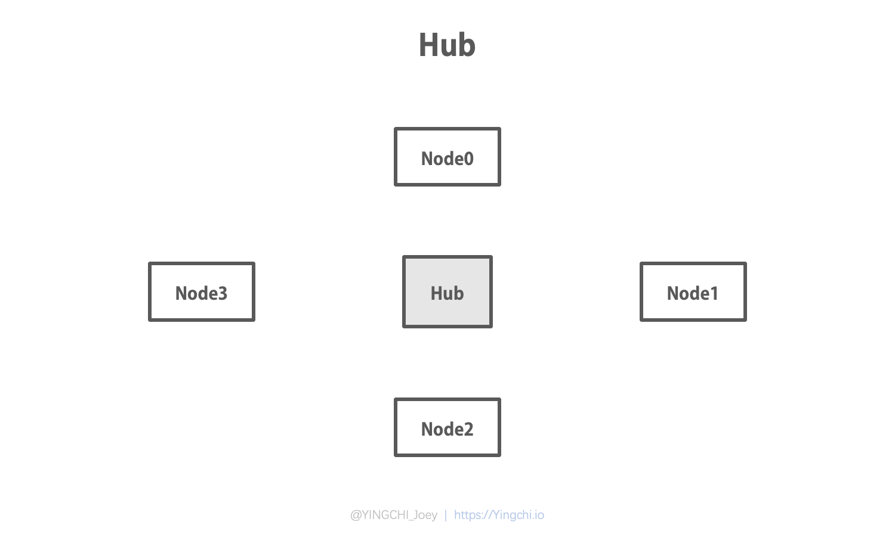
想要实现这几个节点的互连互通，可以连接到叫做 Hub（集线器）的设备上，如下图，这个设备的主要任务仅仅是把接收到的信号整型放大，从其它各个端口转发出去，因此也称之为“中继器”。
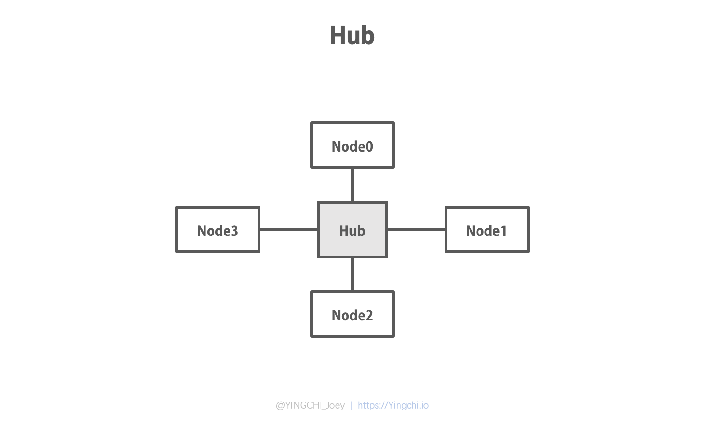
以 Node0 为例展示一下节点发送网络信号的过程。如下图，Node0 向连接的 Hub 发出网络信号，Hub 接收到信号后，将其整型放大，然后转发给了 Node1、Node2、Node3。这其实就是最简单的一种星型的局域网架构。
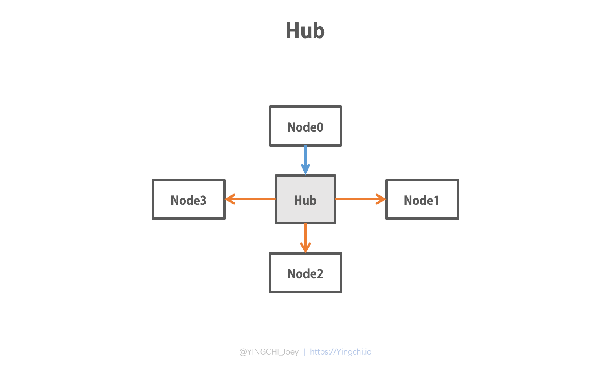
这个过程要注意两点核心：
然后我们再来看一个复杂一点的例子，假如两个机房各有一组终端节点连接到了各自的 Hub 上，各自组成了局域网，如下图。
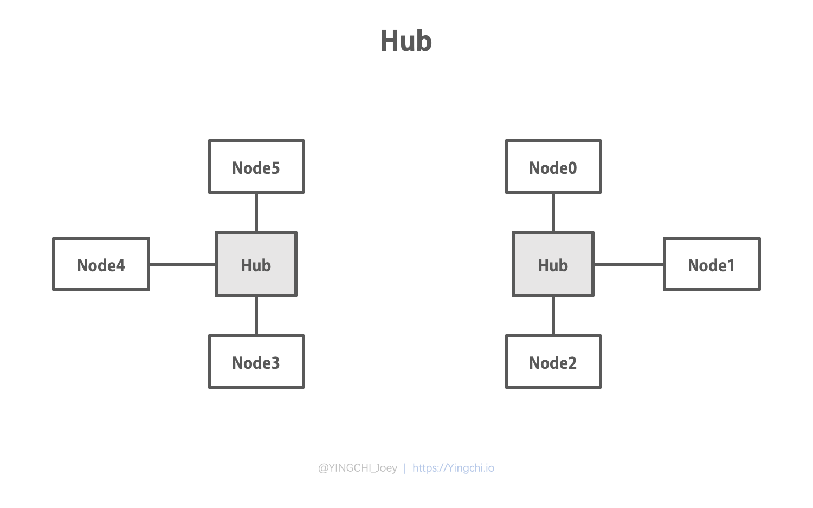
我们现在想把两个房间的网络互连起来，应该如何做？按照上面的思想，我们是否可以加入一个更高层级的 Hub（称之为主干 Hub），把各个机房的网络连接起来？如图
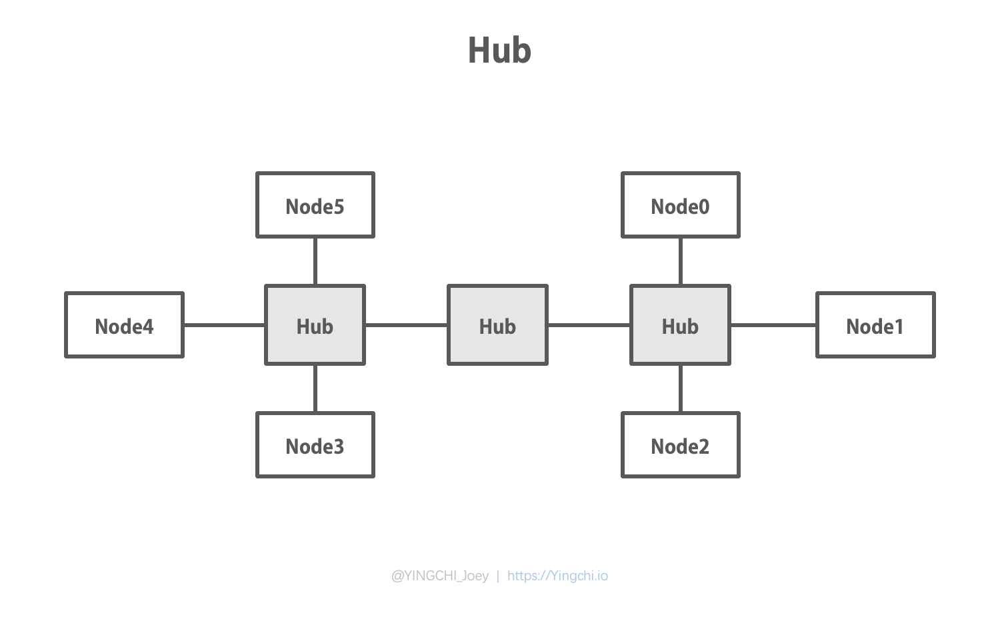
答案是可行的，在这种情况下，通过中间这个主干 Hub的转发，我们可以将一个机房发出的信号转发到另一个机房，如图
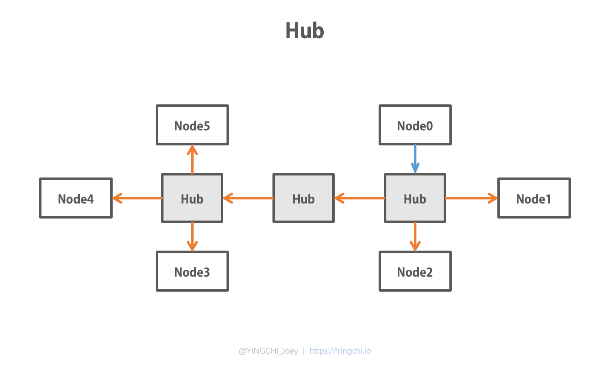
但是，虽然可行，我们应该有这样的疑问，这样做真的好吗？虽然两个机房的网络互通了，但是是否又增加了这个网络的负担呢？我们举一个简单的例子就可以发现问题所在，假如 Node0 仅仅是想将信号发送给 Node1，尽管从网络拓扑中看到他们挨得很近，仅仅通过一个 Hub 就可以转发到，但是由于 Hub 只能采用广播的方式转发，因此这个信号不仅被传到了 Node2 上，还通过刚加入的总集线器被传递到了另一个机房的所有节点中，当然这些都是无用功。
说到这里，我们还要认识两个概念 —— 冲突域和广播域。其实很好理解，所谓冲突域，很多地方也叫碰撞域，顾名思义，就是在当网络中有一个信号在流转时，此时若有另一个节点向网络中发送信号，会引起干扰，也就是冲突或碰撞，这个受波及的范围就是冲突域，我们可以认为，L1 网络中靠类似 Hub 这种设备连接起来的物理网段都是属于一个冲突域，Hub 是无法隔离冲突域的，在 L2、L3 网络中均有能力隔离冲突域；另一个概念，广播域，广播域就是接收同样广播消息的集合，我们一般认为，广播域其实就是同一个网络的代名词，我们如今所使用的互联网，其实是通过 Router 这种网际交换设备连接不同网络而产生的。
结合上面这两个概念，我们重新分析通过主干 Hub 连接两个局域网的方式，就能明白为什么这样会严重影响网络性能了。
那么，还是针对连接两个机房的场景，我们期望既可以实现两个网络的互通，又能提高通信的效率，有没有好的方式呢？
现在到网络模型的第2层，也就是数据链路层，看一下这一层的网络设备。继续讨论之前的场景，这次我们不再采用主干 Hub 的方案，而是加入一个叫做 Bridge（网桥）的设备，狭义上的网桥其实是二端口网桥，如图。所谓 Bridge，我们很容易就能明白这是一个桥接设备，桥接的核心是延长，是扩大，因此，我们可以在某种程度上把它看做为一个智能的、高级的 Hub，智能高级的原因是它是工作在第二层的，在进行它的工作原理介绍之前，重新看一下我之前 L1 层对于 Hub 工作原理的描述，网络中流转的信息我在第一层中是以“信号”称呼的，因为第一层只能操作物理电信号，无非就是对电流的整型放大复制转发。
来到第二层，电信号已经有了最基本的数据意义，这种基本的数据我们称之为“数据帧”，或简称为“帧”，就像是儿童刚有了认知能力一样，当网络对传递的信息有了数据层面的判断。不仅是传递的信息被封装的高级了，每个通信节点也开始用起了自己的身份证，叫做MAC（Media Access Control Address），有些地方也称之为局域网地址，注意，这个地址是全球唯一的，相当于每个通信设备都会有一个唯一标识，就好比你的身份证不会重号那样。那么，基于第二层实现了这么多概念，就可以做一些更智能的事情，于是，L2 中的 Bridge 设备便可以对帧在识别、过滤的基础上借助 MAC 实现更高效地转发，而且，Bridge 设备还具有一定的记忆功能，会记住网络中节点的 MAC 地址以及对应的端口，这一点很重要。
如下图，假如 Bridge 已经知道了 Node2 的 MAC，此时 Node0 想给 Node2 发送一条消息，那么 Bridge 接收到数据帧时，就不会再转发到另一个机房中去，只让帧在右边这个网段里转发，这样就已经比之前通过主干 Hub 的方式冲突的几率就更小了，换句话说，通信效率就提高了，Bridge 的这种特性我们称之为“隔离冲突域”
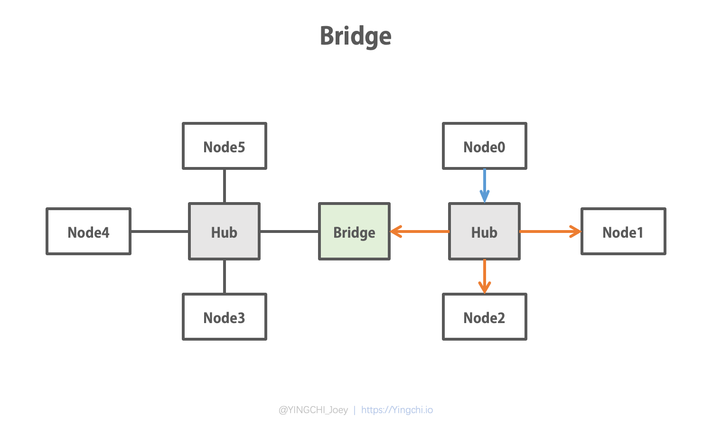
二端口网桥并没有流行很久，受此启发，多端口网桥研制了出来，将其优点发挥到极致。如图，图中的 Bridge 已经是现在广义概念上的多端口网桥了，在很多地方称之为交换机（Switch），通过 Switch 组建局域网已经是很普遍的事了，很多朋友使用的路由器（Router），其中的功能子集就有 Switch。
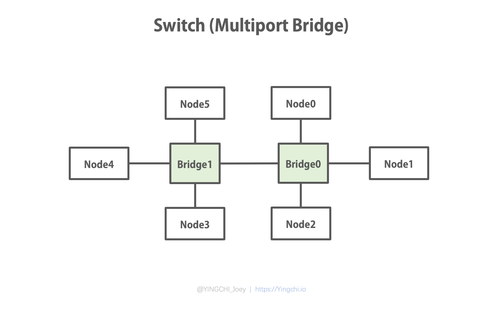
多端口网桥是具有“学习”功能的，通过对帧不断地过滤转发，可以记住网络中节点的地址，让之后的帧转发更高效，如下图，假如 Node0 要给 Node5 发一条数据，在最初状态下，所有 Bridge 都不认识 Node0，也不认识 Node5，因此在转发帧的过程中，从帧中记录下发送方 Node0 的 MAC 和端口号（文章内我们就简单以节点名当做端口号），意思是，“下次别人如果找你的话，我就知道通过哪个端口转发给你了”，而接收方在哪里，需要往哪个指定的端口转发出去，Bridge 一开始并不知道的，因此只能通过广播的方式转发出去，这个过程中，Node5 收到了 Node0 发来的数据帧。
可以看到，通过多端口网桥构建的网络，和第一层的 Hub 一样，这广播域上也是无法做到隔离的。
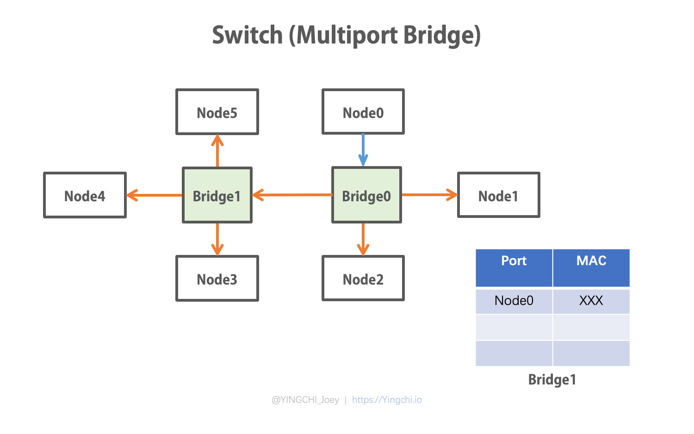
当 Bridge1 中记住了 Node0 的 MAC 和端口，这时如果 Node3 想发送数据给 Node0，Bridge 还会广播给 Node1 和 Node2 端口吗？如图，明显不会了，因为我们说了，Bridge 是具有学习功能的，当能够明确接收方端口的时候，就可以进行针对性转发，没有必要再进行广播浪费资源了。
而且值得注意的是，使用交换机的情况下，支持 LAN 内的全双工通信，举个例子，Node3 向 Node0 发送数据帧的同时也允许 Node0 向 Node3 发送数据帧，这里原理简单说一下，就是因为 Switch 内部实现了存储转发，并且与终端节点的连接是点对点独立的，也就是 Node3 到 Switch 和 Switch 到 Node0 是两条独立连接，又根据存储转发的特性，可以在线路空闲时将数据帧转发出去，从而完成这种全双工通信。这种提升的意义，如从 Hub 到 Switch 实现了从共享网络带宽到独享网络带宽，全双工实现了数据帧发送和接收的独享带宽。
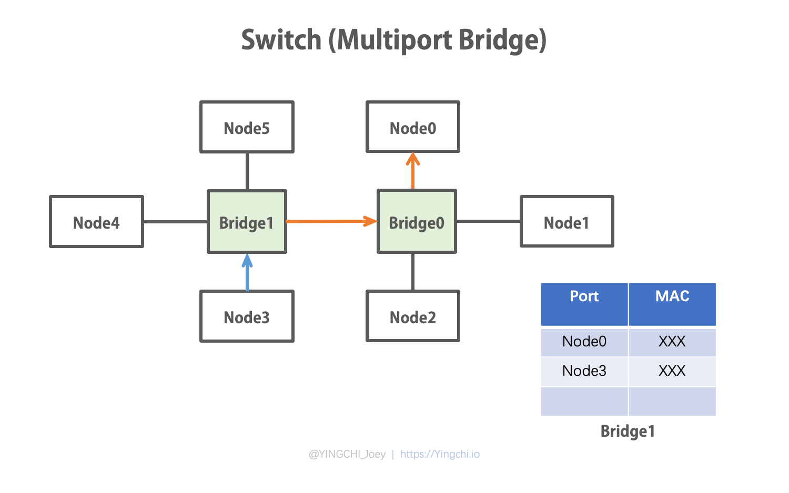
最后简单说一下 Router 吧，其实当 L1 L2 这种设备的实现原理能明白之后，对于 L3 及之后的各种设备其实自己也能摸索清楚了，Router 的工作原理可以总结为八个字：路由计算、分组转发，在 Router 层面已经开始面向协议工作了，而 Bridge 与高层的协议无关。Router 通过 IP 地址寻址，对于同一网段的地址，到达路由器接口后就不再转发，实现了隔离广播的作用，这一点是 Bridge 做不到的。因此，作为 L3 的设备，Router 实现了既可以隔离冲突域，又可以隔离广播域。但是我们也要注意到一点，越往高层走，对数据的处理越复杂，这也是会影响通信效率的，所以不同的场景下要选择最合适的设备才是正确的。
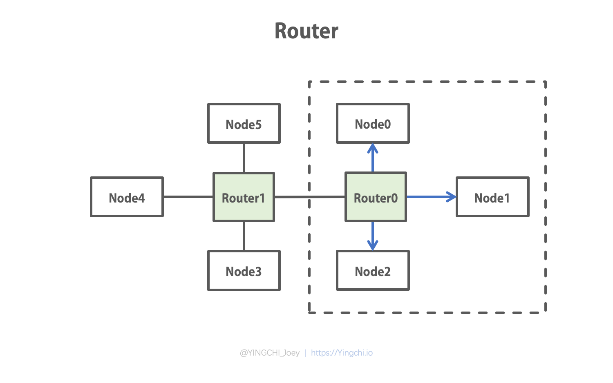
最后总结一下，Hub 无法隔离冲突域，在同一个冲突域内通信；Bridge 可以隔离冲突域，无法隔离广播域，在同一个广播域内通信；路由器可以隔离冲突域和广播域，可以实现不同广播域间通信。或者 Hub 与 Bridge 只能是扩展局域网的设备，而 Router 是连接异构网络的设备。
《思科网络技术学院教程 CCNA Exploration：网络基础知识》
Network Devices (Hub, Repeater, Bridge, Switch, Router, Gateways and Brouter)